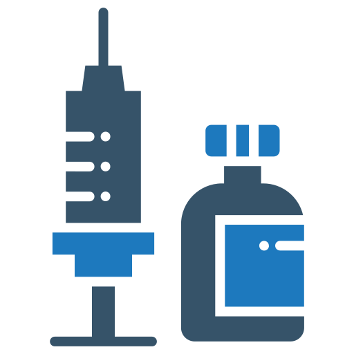

ХИМИОТЕРАПИЯ

Химиотерапия — один из видов лекарственного лечения рака. Пациенту назначается курс препаратов, которые уничтожают делящиеся клетки, к которым, в том числе, относятся и раковые.
Химиотерапия может использоваться как самостоятельный метод лечения некоторых злокачественных опухолей, так и в сочетании с другими методами лечения (хирургическая операция, лучевая терапия, гормональная терапия), что значительно повышает эффективность и общий терапевтический эффект.
Преимущества химиотерапии
Главное преимущество — доступность и высокая эффективность. Химиотерапевтическое лечение имеет в своем арсенале большой выбор действенных лекарственных препаратов и дает возможность не только вылечить онкологическое заболевание, но и осуществлять контроль за его течением, не давая раковым клеткам увеличиваться и распространяться в организме, образовывая метастазы.
 Виды химиотерапии
-
Лечебная химиотерапия
Метод используется в качестве основного лечения. Например, при раке крови или лимфатической системы не применяется хирургическое вмешательство, терапия основана на применении лекарственных препаратов.
-
Неоадъювантная химиотерапия
Метод сопутствует основному лечению. В большинстве случаев препараты назначаются перед проведением операции, чтобы уменьшить размер опухоли, снизить активность ее клеток.
-
Адъювантная химиотерапия
Проводится с целью профилактики после основного лечения (радикального хирургического удаления опухоли или лучевой терапии), чтобы уменьшить риски рецидива болезни.
Препараты в химиотерапии
Первый препарат появился 80 лет назад, за это время в практику химиотерапевтов вошло более 100 новых лекарств, которые эффективно используются в лечении рака. Некоторые применяются в виде монотерапии, другие в полихимиотерапии. Врачи используют различные дозы и комбинации, чтобы соблюдать баланс между токсичностью и эффективностью лечения. Препараты чаще всего вводятся внутривенно или перорально, но бывают исключения.
По механизму воздействия на организм химические препараты разделяют на две большие группы:
-
1
Цитотоксические - запускают процесс самоуничтожения (апоптоза) внутри злокачественной клетки, что приводит к ее гибели.
-
2
Цитостатические - вызывают некроз раковых клеток. При некрозе повреждаются оболочка, ядро и другие ее компоненты, что ведет к смерти клетки.
Лечение проводят курсами — прием лекарств чередуют с перерывами, чтобы дать организму возможность восстановиться. Схему терапии, дозировку и способ введения препарата определяет врач, опираясь на результаты обследования.
Основа успешного лечения — следование рекомендациям по приему лекарств, в том числе, направленных на снижение риска возникновения осложнений, а также строгое соблюдение установленных сроков обследований и процедур.
Широкий спектр новейших препаратов, применяемых для химиотерапии, позволяет составить оптимальный курс лечения рака и тем самым повысить эффективность и минимизировать побочные эффекты от применения химиотерапии. Комбинации конкретных препаратов зависят от вида онкологического заболевания и стоящих перед врачами задач. Для каждого пациента подбирается индивидуальная дозировка и набор препаратов, а также режим их введения в организм для достижения наилучшего лечебного эффекта при минимальном вреде для здоровья.